全文翻译
摘要
扩散模型在图像、音频和视频生成领域取得了显著进展，但它们依赖于迭代采样过程，导致生成速度较慢。为了克服这一限制，我们提出了一致性模型（Consistency Models），这是一类新的模型，通过直接将噪声映射到数据来生成高质量样本。一致性模型在设计上支持快速单步生成，同时也允许多步采样，以便在计算量和样本质量之间进行权衡。它们还支持零样本数据编辑，如图像修复、上色和超分辨率，而无需在这些任务上进行明确的训练。一致性模型既可以通过提炼预训练的扩散模型进行训练，也可以作为独立的生成模型进行训练。通过大量实验，我们证明了在单步和少步采样中，一致性模型优于现有的扩散模型提炼技术，在CIFAR-10数据集上实现了3.55的最先进FID（Frechet Inception Distance），在64×64分辨率的ImageNet数据集上实现了6.20的最先进FID。在独立训练时，一致性模型成为一类新的生成模型，在CIFAR-10、64×64分辨率的ImageNet和256×256分辨率的LSUN等标准基准测试中，其性能优于现有的单步、非对抗性生成模型。
1. 引言
扩散模型（Sohl-Dickstein等人, 2015; Song和Ermon, 2019; 2020; Ho等人, 2020; Song等人, 2021），也称为基于分数的生成模型，已在多个领域取得了前所未有的成功，包括图像生成（Dhariwal和Nichol, 2021; Nichol等人, 2021; Ramesh等人, 2022; Saharia等人, 2022; Rombach等人, 2022）、音频合成（Kong等人, 2020; Chen等人, 2021; Popov等人, 2021）和视频生成（Ho等人, 2022b; 2022a）。扩散模型的一个关键特征是迭代采样过程，该过程从随机初始向量中逐步去除噪声。这个迭代过程在计算量和样本质量之间提供了灵活的权衡，因为使用更多计算资源进行更多次迭代通常会产生质量更好的样本。这也是扩散模型许多零样本数据编辑能力的关键，使它们能够解决从图像修复、上色、笔画引导的图像编辑到计算机断层扫描和磁共振成像等具有挑战性的逆问题（Song和Ermon, 2019; Song等人, 2021; 2022; 2023; Kawar等人, 2021; 2022; Chung等人, 2023; Meng等人, 2021）。然而，与生成对抗网络（GANs, Goodfellow等人, 2014）、变分自编码器（VAEs, Kingma和Welling, 2014; Rezende等人, 2014）或归一化流（Dinh等人, 2015; 2017; Kingma和Dhariwal, 2018）等单步生成模型相比，扩散模型的迭代生成过程在生成样本时通常需要多10 - 2000倍的计算量（Song和Ermon, 2020; Ho等人, 2020; Song等人, 2021; Zhang和Chen, 2022; Lu等人, 2022），这导致推理速度较慢，限制了其在实时应用中的使用。
我们的目标是创建能够实现高效单步生成的生成模型，同时不牺牲迭代采样的重要优势，例如在必要时用计算量换取样本质量，以及执行零样本数据编辑任务。如图1所示，我们基于连续时间扩散模型（Song等人, 2021）中的概率流（PF）常微分方程（ODE）构建模型，其轨迹将数据分布平稳地转换为易于处理的噪声分布。我们提议学习一个模型，该模型能将任意时间步的任意点映射到轨迹的起始点。我们模型的一个显著特性是自一致性：同一轨迹上的点会映射到相同的起始点。因此，我们将这类模型称为一致性模型。一致性模型使我们能够通过仅一次网络评估，将随机噪声向量（ODE轨迹的终点，例如图1中的 $x_{T}$ ）转换为数据样本（ODE轨迹的起始点，例如图1中的 $x_{0}$ ）。重要的是，通过在多个时间步链接一致性模型的输出，我们可以提高样本质量，并以增加计算量为代价执行零样本数据编辑，这与扩散模型的迭代采样类似。
| 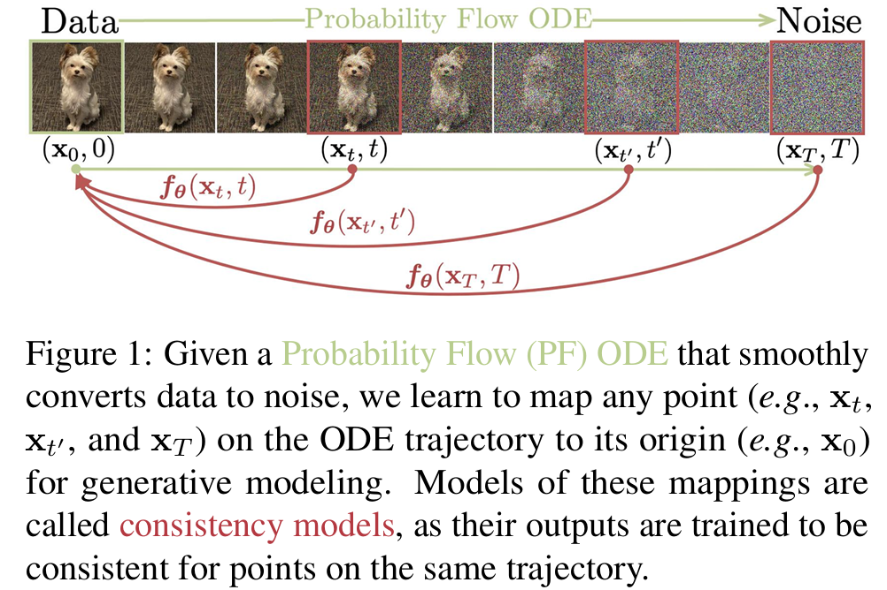 |
|---|
| 图1：给定一个概率流（PF）常微分方程（ODE），它能将数据平稳地转换为噪声，我们学习将该ODE轨迹上的任意点（例如 $x_{t}$, $x_{t’}$, 和 $x_{T}$ ）映射到其起始点（例如 $x_{0}$ ），用于生成建模。这些映射的模型被称为一致性模型，因为它们的输出对于同一轨迹上的点经过训练后是一致的。 |
为了训练一致性模型，我们提出了两种基于强制自一致性属性的方法。第一种方法依赖于使用数值ODE求解器和预训练的扩散模型，在PF ODE轨迹上生成相邻点对。通过最小化模型对这些点对的输出差异，我们可以有效地将扩散模型提炼为一致性模型，从而通过一次网络评估生成高质量样本。相比之下，我们的第二种方法完全不需要预训练的扩散模型，使我们能够独立训练一致性模型。这种方法将一致性模型定位为一个独立的生成模型家族。重要的是，这两种方法都不需要对抗训练，并且对模型架构的限制较小，允许使用灵活的神经网络来参数化一致性模型。
我们在几个图像数据集上展示了一致性模型的有效性，包括CIFAR-10（Krizhevsky等人, 2009）、64×64分辨率的ImageNet（Deng等人, 2009）和256×256分辨率的LSUN（Yu等人, 2015）。从经验上看，作为一种提炼方法，一致性模型在少步生成中优于现有的扩散模型提炼方法，如渐进式提炼（Salimans和Ho, 2022）：在CIFAR-10数据集上，一致性模型在单步和两步生成中分别达到了3.55和2.93的最先进FID；在64×64分辨率的ImageNet数据集上，它在一次和两次网络评估中分别实现了创纪录的6.20和4.70的FID。当作为独立生成模型进行训练时，一致性模型可以匹配或超过渐进式提炼的单步样本质量，尽管它没有使用预训练的扩散模型。它们还能够在多个数据集上超越许多GAN和现有的非对抗性单步生成模型。此外，我们展示了一致性模型可用于执行广泛的零样本数据编辑任务，包括图像去噪、插值、修复、上色、超分辨率和笔画引导的图像编辑（SDEdit, Meng等人, 2021）。
2. 扩散模型
一致性模型深受连续时间扩散模型理论（Song等人, 2021; Karras等人, 2022）的启发。扩散模型通过高斯扰动逐步将数据扰动为噪声，然后通过顺序去噪步骤从噪声中生成样本。设$p_{data}(x)$表示数据分布。扩散模型通过随机微分方程（SDE）（Song等人, 2021）对$p_{data}(x)$进行扩散：
其中$t \in [0, T]$，$T > 0$是一个固定常数，$\mu(\cdot, \cdot)$和$\sigma(\cdot)$分别是漂移系数和扩散系数，$\{w_{t}\}_{t \in [0, T]}$表示标准布朗运动。
我们将$x_{t}$的分布表示为$p_{t}(x)$，因此$p_{0}(x) \equiv p_{data}(x)$。这个SDE的一个显著性质是存在一个常微分方程（ODE），Song等人（2021）将其称为概率流（PF）ODE，其在$t$时刻采样的解轨迹服从$p_{t}(x)$分布：
这里$\nabla \log p_{t}(x)$是$p_{t}(x)$的分数函数；因此扩散模型也被称为基于分数的生成模型（Song和Ermon, 2019; 2020; Song等人, 2021）。
通常，公式（1）中的SDE被设计为使得$p_{T}(x)$接近一个易于处理的高斯分布$\pi(x)$。此后，我们采用Karras等人（2022）的设置，其中$\mu(x, t)=0$且$\sigma(t)=\sqrt{2t}$。在这种情况下，我们有$p_{t}(x)=p_{data}(x) \otimes N(0, t^{2}I)$，其中$\otimes$表示卷积运算，$\pi(x)=N(0, T^{2}I)$。对于采样，我们首先通过分数匹配（Hyvärinen和Dayan, 2005; Vincent, 2011; Song等人, 2019; Song和Ermon, 2019; Ho等人, 2020）训练一个分数模型$s_{\phi}(x, t) \approx \nabla \log p_{t}(x)$，然后将其代入公式（2）中，得到PF ODE的经验估计，其形式为：
我们将公式（3）称为经验PF ODE。接下来，我们从$\hat{x}_{T} \sim \pi = N(0, T^{2}I)$中采样，初始化经验PF ODE，并使用任何数值ODE求解器（如Euler（Song等人, 2020; 2021）和Heun求解器（Karras等人, 2022））在时间上反向求解，以获得解轨迹$\{\hat{x}_{t}\}_{t \in [0, T]}$。得到的$\hat{x}_{0}$可以被视为来自数据分布$p_{data}(x)$的近似样本。为了避免数值不稳定，通常在$t = \epsilon$时停止求解器，其中$\epsilon$是一个固定的小正数，并将$\hat{x}_{\epsilon}$作为近似样本。遵循Karras等人（2022），我们将图像像素值重新缩放到$[-1, 1]$，并设置$T = 80$，$\epsilon = 0.002$。
| 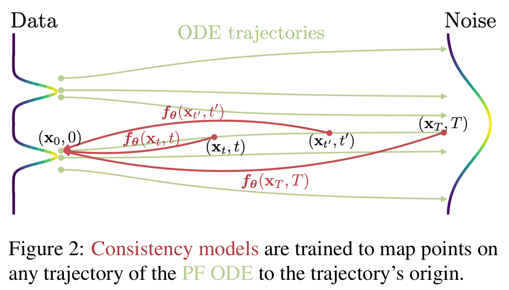 |
|---|
| 图2：一致性模型被训练为将PF ODE的任何轨迹上的点映射到该轨迹的起点。 |
扩散模型的瓶颈在于其采样速度较慢。显然，使用ODE求解器进行采样需要对分数模型$s_{\phi}(x, t)$进行迭代评估，这在计算上成本很高。现有的快速采样方法包括更快的数值ODE求解器（Song等人, 2020; Zhang和Chen, 2022; Lu等人, 2022; Dockhorn等人, 2022）和提炼技术（Luhman和Luhman, 2021; Salimans和Ho, 2022; Meng等人, 2022; Zheng等人, 2022）。然而，ODE求解器仍然需要超过10个评估步骤才能生成具有竞争力的样本。大多数提炼方法，如Luhman和Luhman（2021）以及Zheng等人（2022），在提炼之前依赖于从扩散模型收集大量样本数据集，这本身在计算上就很昂贵。据我们所知，唯一不受此缺点影响的提炼方法是渐进式提炼（PD, Salimans和Ho（2022）），在我们的实验中，我们将一致性模型与它进行了广泛的比较。
3. 一致性模型
我们提出一致性模型，这是一种新型模型，其核心设计支持单步生成，同时仍允许多步生成，以便在样本质量和计算成本之间进行权衡，还支持零样本数据编辑。一致性模型可以在蒸馏模式或独立模式下进行训练。在前一种情况下，一致性模型将预训练扩散模型的知识提炼到单步采样器中，显著提高了其他蒸馏方法的样本质量，同时支持零样本图像编辑应用。在后一种情况下，一致性模型独立训练，不依赖预训练的扩散模型，这使其成为一类独立的新型生成模型。
- 采样：使用训练良好的一致性模型$f_{\theta}(\cdot,\cdot)$，我们可以通过从初始分布$\hat{x}_{T} \sim N(0, T^{2}I)$采样，然后计算$\hat{x}_{\epsilon}=f_{\theta}(\hat{x}_{T}, T)$来生成样本。这只需要对一致性模型进行一次前向传播，因此可以单步生成样本。重要的是，人们还可以通过交替进行去噪和噪声注入步骤多次计算一致性模型，以提高样本质量。如算法1所示，这种多步采样过程提供了用计算成本换取样本质量的灵活性，它在零样本数据编辑中也有重要应用。在实践中，我们通过贪心算法确定算法1中的时间点$\tau_{1}>\tau_{2}>\cdots>\tau_{N - 1}$，即使用三分搜索逐点确定时间点，以优化从算法1获得的样本的FID（Fréchet Inception Distance）。这里假设在给定先前时间点的情况下，FID是下一个时间点的单峰函数。在实验中我们发现这个假设是成立的，将探索更好的策略留作未来的工作。
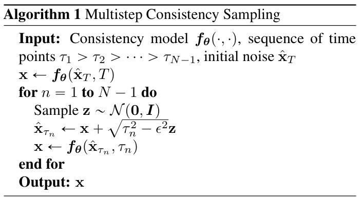
- 定义：给定公式(2)中PF ODE的解轨迹$\{x_{t}\}_{t \in [\epsilon, T]}$，我们将一致性函数定义为$f:(x_{t}, t) \mapsto x_{\epsilon}$。一致性函数具有自一致性属性：对于属于同一PF ODE轨迹的任意$(x_{t}, t)$对，其输出是一致的，即对于所有$t, t’ \in [\epsilon, T]$，有$f(x_{t}, t)=f(x_{t’}, t’)$。如图2所示，一致性模型（用$f_{\theta}$表示）的目标是通过学习强制自一致性属性，从数据中估计这个一致性函数（详见第4和第5节）。需要注意的是，在神经ODE（Chen等人, 2018）的背景下，神经流（Biloš等人, 2021）也使用了类似的定义。然而，与神经流不同，我们不要求一致性模型是可逆的。
- 参数化：对于任何一致性函数$f(\cdot,\cdot)$，我们有$f(x_{\epsilon}, \epsilon)=x_{\epsilon}$，即$f(\cdot, \epsilon)$是一个恒等函数。我们将这个约束称为边界条件。所有一致性模型都必须满足这个边界条件，因为它在一致性模型的成功训练中起着至关重要的作用。这个边界条件也是对一致性模型架构最严格的约束。对于基于深度神经网络的一致性模型，我们讨论两种几乎无成本实现这个边界条件的方法。假设我们有一个自由形式的深度神经网络$F_{\theta}(x, t)$，其输出与$x$具有相同的维度。第一种方法是简单地将一致性模型参数化为：第二种方法是使用跳跃连接来参数化一致性模型，即：其中$c_{skip}(t)$和$c_{out}(t)$是可微函数，且$c_{skip}(\epsilon)=1$，$c_{out}(\epsilon)=0$。这样，如果$F_{\theta}(x, t)$、$c_{skip}(t)$和$c_{out}(t)$都是可微的，那么一致性模型在$t = \epsilon$处是可微的，这对于训练连续时间一致性模型至关重要（附录B.1和B.2）。公式(5)中的参数化与许多成功的扩散模型（Karras等人, 2022; Balaji等人, 2022）非常相似，使得借用强大的扩散模型架构来构建一致性模型变得更加容易。因此，在所有实验中我们都采用第二种参数化方法。
- 零样本数据编辑：与扩散模型类似，一致性模型支持各种零样本的数据编辑和操作应用；它们无需针对这些任务进行明确训练。例如，一致性模型定义了从高斯噪声向量到数据样本的一对一映射。与生成对抗网络（GANs）、变分自编码器（VAEs）和归一化流等潜在变量模型类似，一致性模型可以通过遍历潜在空间轻松地在样本之间进行插值（图11）。由于一致性模型被训练为从任何噪声输入$x_{t}$（其中$t \in [\epsilon, T]$）中恢复$x_{\epsilon}$，它们可以对各种噪声水平进行去噪（图12）。此外，算法1中的多步生成过程对于通过类似于扩散模型的迭代替换过程零样本解决某些逆问题很有用（Song和Ermon, 2019; Song等人, 2021; Ho等人, 2022b）。这使得在图像编辑领域有许多应用，包括图像修复（图10）、上色（图8）、超分辨率（图6b）和笔画引导的图像编辑（图13），就像在SDEdit（Meng等人, 2021）中一样。在6.3节中，我们通过实验展示了一致性模型在许多零样本图像编辑任务上的强大能力。
4. 通过蒸馏训练一致性模型
我们提出基于蒸馏预训练分数模型$s_{\phi}(x, t)$来训练一致性模型的第一种方法。我们的讨论围绕通过将分数模型$s_{\phi}(x, t)$代入概率流（PF）常微分方程（ODE）得到的经验PF ODE（公式(3)）展开。考虑将时间区间$[\epsilon, T]$离散化为$N - 1$个子区间，边界为$t_{1}=\epsilon < t_{2}<\cdots<t_{N}=T$。在实践中，我们遵循Karras等人（2022）的公式$t_{i}=(\epsilon^{1 / \rho}+(i - 1)/(N - 1)(T^{1 / \rho}-\epsilon^{1 / \rho}))^{\rho}$来确定边界，其中$\rho = 7$ 。当$N$足够大时，我们可以通过运行数值ODE求解器的一个离散化步骤，从$x_{t_{n + 1}}$得到$x_{t_{n}}$的准确估计。我们将这个估计记为$\hat{x}_{t_{n}}^{\phi}$，其定义为：
其中$\Phi(\cdots;\phi)$表示应用于经验概率流常微分方程（PF ODE）的单步常微分方程求解器的更新函数。例如，当使用欧拉（Euler）求解器时，我们有$\Phi(x, t;\phi)= -ts_{\phi}(x, t)$，这对应于以下更新规则：
为简单起见，在这项工作中我们仅考虑单步ODE求解器。将我们的框架推广到多步ODE求解器是很直接的，我们把这留作未来的工作。
由于公式(2)中的概率流常微分方程（PF ODE）与公式(1)中的随机微分方程（SDE）之间存在联系（见第2节），人们可以按照以下方式沿着常微分方程轨迹的分布进行采样：首先从数据分布$x \sim p_{data}$中采样$x$，然后给$x$添加高斯噪声。具体而言，给定一个数据点$x$，我们可以高效地在概率流常微分方程轨迹上生成一对相邻的数据点$(\hat{\mathbf{x}}_{t_n}^{\phi}, \mathbf{x}_{t_{n + 1}})$ ，方法是先从数据集中采样$x$，接着从随机微分方程的转移密度$\mathcal{N}(\mathbf{x}, t_{n + 1}^2\mathbf{I})$中采样$\mathbf{x}_{t_{n + 1}}$，然后根据公式(6)使用数值常微分方程求解器的一个离散化步骤计算$\hat{\mathbf{x}}_{t_n}^{\phi}$。之后，我们通过最小化一致性模型在数据对$(\hat{\mathbf{x}}_{t_n}^{\phi}, \mathbf{x}_{t_{n + 1}})$上的输出差异来训练一致性模型。这就促使我们得出以下用于训练一致性模型的一致性蒸馏损失。
定义1：一致性蒸馏损失定义为
其中期望是关于$x \sim p_{data}$ 、$n \sim \mathcal{U}[1, N - 1]$ 取的，并且$\mathbf{x}_{t_{n + 1}} \sim \mathcal{N}(\mathbf{x}; t_{n + 1}^2\mathbf{I})$。这里$\mathcal{U}[1, N - 1]$表示在$\{1, 2, \cdots, N - 1\}$上的均匀分布，$\lambda(\cdot) \in \mathbb{R}^+$是一个正的加权函数，$\hat{\mathbf{x}}_{t_n}^{\phi}$由公式(6)给出，$\boldsymbol{\theta}^{-}$表示在优化过程中$\boldsymbol{\theta}$过去值的滑动平均，$d(\cdot, \cdot)$是一个度量函数，满足$\forall \mathbf{x}, \mathbf{y} : d(\mathbf{x}, \mathbf{y}) \geq 0$，并且当且仅当$\mathbf{x} = \mathbf{y}$时$d(\mathbf{x}, \mathbf{y}) = 0$。
除非另有说明，本文通篇采用定义1中的符号，并使用$\mathbb{E}[\cdot]$表示对所有随机变量的期望。在实验中，我们考虑平方$\ell_{2}$距离$d(x, y)=|x - y|_{2}^{2}$、$\ell*{1}$距离$d(x, y)=|x - y|_{1}$，以及学习感知图像块相似度（LPIPS，Zhang等人，2018）。我们发现$\lambda(t)_{n}) \equiv 1$在所有任务和数据集上都表现良好。在实际操作中，我们通过对模型参数$\theta$进行随机梯度下降来最小化目标函数，同时使用指数移动平均（EMA）更新$\theta^{-}$。也就是说，给定衰减率$0 \leq \mu < 1$，我们在每次优化步骤后进行如下更新：
整体训练过程总结在算法2中。与深度强化学习（Mnih等人，2013年；2015年；Lillicrap等人，2015年）和基于动量的对比学习（Grill等人，2020年；He等人，2020年）中的惯例一致，我们将$f_{\theta -}$称为 “目标网络”，将$f_{\theta}$称为 “在线网络”。我们发现，与简单地设置$\theta^{-}=\theta$相比，公式（8）中的指数移动平均（EMA）更新和“stopgrad”操作可以极大地稳定训练过程，并提高一致性模型的最终性能。
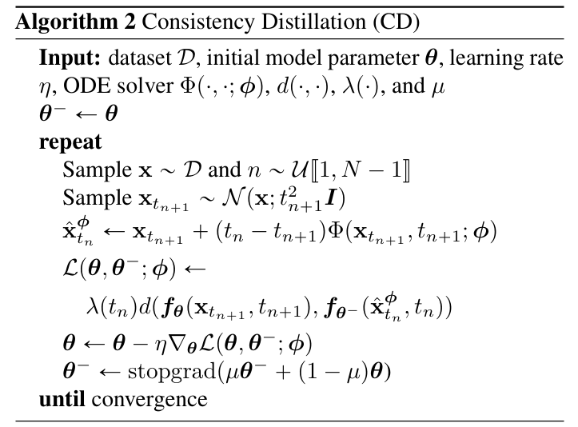
下面我们基于渐近分析为一致性蒸馏提供理论依据。
定理1：设$\Delta t := \max_{n \in [1, N - 1]}|t_{n + 1} - t_{n}|$，$f(\cdot, \cdot ; \phi)$是公式(3)中经验概率流常微分方程（PF ODE）的一致性函数。假设$f_{\theta}$满足利普希茨（Lipschitz）条件：存在$L > 0$，使得对于所有$t \in [\epsilon, T]$、$x$和$y$，都有$\left|f_{\theta}(x, t) - f_{\theta}(y, t)\right|_{2} \leq L|x - y|_{2}$ 。进一步假设对于所有$n \in [1, N - 1]$，在$t_{n + 1}$时刻调用的常微分方程（ODE）求解器的局部误差一致有界为$O((t_{n + 1} - t_{n})^{p + 1})$，其中$p \geq 1$。那么，如果$L_{CD}^{N}(\theta, \theta ; \phi) = 0$，我们有：
证明。该证明基于归纳法，与数值常微分方程求解器全局误差界的经典证明类似（Süli和Mayers，2003年）。完整证明见附录A.2。
由于$\theta^{-}$是$\theta$历史值的滑动平均，当算法2的优化收敛时，我们有$\theta^{-}=\theta$。也就是说，目标一致性模型和在线一致性模型最终会相互匹配。如果一致性模型还实现了零一致性蒸馏损失，那么定理1表明，在某些正则条件下，只要ODE求解器的步长足够小，估计的一致性模型可以达到任意精确的程度。重要的是，我们的边界条件$f_{\theta}(x, \epsilon) \equiv x$排除了在一致性模型训练中出现平凡解$f_{\theta}(x, t) \equiv 0$的情况。
如果$\theta^{-}=\theta$或$\theta^{-}=stopgrad(\theta)$，一致性蒸馏损失$L_{CD}^{N}(\theta, \theta^{-} ; \phi)$可以扩展到无限多个时间步（$N \to \infty$ ）。由此得到的连续时间损失函数无需指定$N$，也无需指定时间步$\{t_{1}, t_{2}, \cdots, t_{N}\}$ 。尽管如此，它们涉及雅可比向量积，需要前向自动微分以实现高效计算，而这在一些深度学习框架中可能支持不佳。我们在定理3至定理5中给出了这些连续时间蒸馏损失函数，并将详细内容放在附录B.1中。
5. 独立训练一致性模型
一致性模型可以在不依赖任何预训练扩散模型的情况下进行训练。这与现有的扩散模型蒸馏技术不同，使一致性模型成为一个新的独立生成模型家族。
回想一下，在一致性蒸馏中，我们依赖预训练的分数模型$s_{\phi}(x, t)$来近似真实的分数函数$\nabla \log p_{t}(x)$。事实证明，我们可以通过利用以下无偏估计（附录A中的引理1）完全避免使用预训练的分数模型：
其中$x \sim p_{data}$且$x_{t} \sim N(x; t^{2}I)$。也就是说，给定$x$和$x_{t}$，我们可以用$-(x_{t} - x) / t^{2}$来估计$\nabla \log p_{t}(x_{t})$。
证明：证明基于归纳法，与数值ODE求解器全局误差界的经典证明类似（Süli和Mayers, 2003）。完整证明见附录A.2。$\square$
当使用Euler方法作为ODE求解器且$N \to \infty$时，这个无偏估计足以替代一致性蒸馏中的预训练扩散模型，以下结果证明了这一点。
- 定理2：设$\Delta t := \max_{n \in [1, N - 1]}|t_{n + 1} - t_{n}|$。假设$d$和$f_{\theta^{-}}$都是二阶连续可微的，且二阶导数有界，加权函数$\lambda(\cdot)$有界，并且$\mathbb{E}[|\nabla \log p_{t_{n}}(x_{t_{n}})|_{2}^{2}] < \infty$。进一步假设我们使用Euler ODE求解器，且预训练的分数模型与真实值匹配，即$\forall t \in [\epsilon, T]: s_{\phi}(x, t) \equiv \nabla \log p_{t}(x)$。那么，其中期望是关于$x \sim p_{data}$、$n \sim U[1, N - 1]$和$x_{t_{n + 1}} \sim N(x; t_{n + 1}^{2}I)$取的。一致性训练目标，记为$L_{CT}^{N}(\theta, \theta^{-})$，定义为：其中$z \sim N(0, I)$。此外，如果$\inf_{N} L_{CD}^{N}(\theta, \theta^{-}; \phi) > 0$，则$L_{CT}^{N}(\theta, \theta^{-}) \geq O(\Delta t)$。
证明：证明基于泰勒级数展开和分数函数的性质（引理1）。完整证明见附录A.3。$\square$
我们将公式(10)称为一致性训练（CT）损失。关键的是，$L(\theta, \theta^{-})$仅依赖于在线网络$f_{\theta}$和目标网络$f_{\theta^{-}}$，而与扩散模型参数$\phi$完全无关。损失函数$L(\theta, \theta^{-}) \geq O(\Delta t)$的下降速度比余项$o(\Delta t)$慢，因此当$N \to \infty$且$\Delta t \to 0$时，它将主导公式(9)中的损失。
为了提高实际性能，我们建议在训练过程中根据调度函数$N(-)$逐步增加$N$。直观地说（参见图3d），当$N$较小时（即$\Delta t$较大），一致性训练损失相对于潜在的一致性蒸馏损失（即公式(9)的左边）具有较小的“方差”但较大的“偏差”，这有助于在训练开始时更快地收敛。相反，当$N$较大时（即$\Delta t$较小），它具有较大的“方差”但较小的“偏差”，这在训练接近结束时是理想的。为了获得最佳性能，我们还发现$\mu$应该根据调度函数$\mu(\cdot)$随$N$变化。一致性训练的完整算法在算法3中给出，我们实验中使用的调度函数在附录C中给出。与一致性蒸馏类似，如果$\theta^{-} = stopgrad(\theta)$，一致性训练损失$L_{CT}^{N}(\theta, \theta^{-})$可以扩展到连续时间（即$N \to \infty$ ），如定理6所示。这个连续时间损失函数不需要$N$或$\mu$的调度函数，但需要前向模式自动微分以实现高效计算。与离散时间CT损失不同，连续时间目标没有不良的“偏差”，因为在定理2中我们有效地使$\Delta t \to 0$。更多细节见附录B.2。
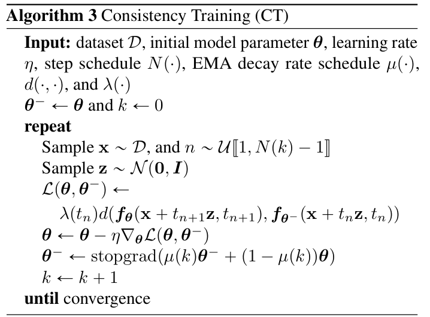
6. 实验
我们采用一致性蒸馏和一致性训练方法，在真实图像数据集上学习一致性模型，这些数据集包括CIFAR-10（Krizhevsky等人, 2009）、64×64分辨率的ImageNet（Deng等人, 2009）、256×256分辨率的LSUN卧室数据集以及256×256分辨率的LSUN猫数据集（Yu等人, 2015）。实验结果依据弗雷歇 inception距离（FID, Heusel等人, 2017，数值越低越好）、inception分数（IS, Salimans等人, 2016，数值越高越好）、精度（Prec., Kynkäänniemi等人, 2019，数值越高越好）和召回率（Rec., Kynkäänniemi等人, 2019，数值越高越好）进行比较。附录C提供了更多实验细节。
6.1 训练一致性模型
我们在CIFAR-10数据集上进行了一系列实验，以探究各种超参数对通过一致性蒸馏（CD）和一致性训练（CT）训练的一致性模型性能的影响。我们首先关注度量函数$d(\cdot, \cdot)$、ODE求解器以及CD中离散化步数$N$的影响，然后研究CT中调度函数$N(·)$和$\mu(·)$的影响。
为了设置CD的实验，我们将平方$\ell_{2}$距离$d(x, y)=|x - y|_{2}^{2}$、$\ell_{1}$距离$d(x, y)=|x - y|_{1}$以及学习感知图像块相似度（LPIPS, Zhang等人, 2018）作为度量函数。对于ODE求解器，我们比较Karras等人（2022）中详细介绍的Euler前向法和Heun二阶法。对于离散化步数$N$，我们比较$N \in \{9, 12, 18, 36, 50, 60, 80, 120\}$。在我们的实验中，所有通过CD训练的一致性模型均使用相应的预训练扩散模型进行初始化，而通过CT训练的模型则随机初始化。
如图3a所示，CD的最优度量是LPIPS，在所有训练迭代中，它的性能都大幅优于$\ell_{1}$和$\ell_{2}$。这是意料之中的，因为在CIFAR-10数据集上，一致性模型的输出是图像，而LPIPS是专门为衡量自然图像之间的相似度而设计的。接下来，我们探究哪种ODE求解器和离散化步数$N$最适合CD。如图3b和3c所示，Heun ODE求解器和$N = 18$是最佳选择。尽管我们训练的是一致性模型而非扩散模型，但这两个选择都与Karras等人（2022）的建议相符。此外，图3b表明，在$N$相同的情况下，Heun二阶求解器始终优于Euler一阶求解器。这证实了定理1的结论，即使用更高阶ODE求解器训练的最优一致性模型在相同$N$下具有更小的估计误差。图3c的结果还表明，一旦$N$足够大，CD的性能对$N$就不再敏感。基于这些发现，除非另有说明，我们在CD中使用LPIPS和Heun ODE求解器。对于CIFAR-10和64×64分辨率的ImageNet数据集，$N$的选择遵循Karras等人（2022）的建议。我们在其他数据集上分别调整$N$（附录C中有详细信息）。
由于CD和CT之间存在紧密联系，本文中我们在CT实验中始终采用LPIPS。与CD不同，CT中的损失函数不依赖于特定的数值ODE求解器，因此无需使用Heun二阶求解器。如图3d所示，CT的收敛对$N$高度敏感 —— 较小的$N$会导致更快的收敛，但样本质量较差；而较大的$N$会使收敛变慢，但收敛后的样本质量更好。这与我们在第5节中的分析一致，也促使我们在CT中实际选择逐渐增加$N$和$\mu$，以平衡收敛速度和样本质量。如图3d所示，$N$和$\mu$的自适应调度显著提高了CT的收敛速度和样本质量。在实验中，我们针对不同分辨率的图像分别调整调度函数$N(-)$和$\mu(·)$，附录C中有更多详细信息。
| 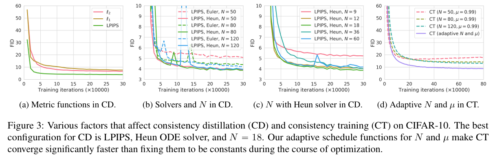 |
|---|
| 图3：在CIFAR - 10数据集上影响一致性蒸馏（CD）和一致性训练（CT）的各种因素。一致性蒸馏的最佳配置是使用LPIPS（感知损失度量）、休恩（Heun）常微分方程求解器，且$N = 18$ 。在优化过程中，我们针对$N$和$\mu$的自适应调度函数使得一致性训练的收敛速度明显快于将它们固定为常数的情况。 |
6.2 少步图像生成
- 蒸馏：在当前文献中，与我们的一致性蒸馏（CD）最直接可比的方法是渐进式蒸馏（PD, Salimans和Ho, 2022）；到目前为止，这两种方法是仅有的在蒸馏前无需构建合成数据的蒸馏方法。相比之下，其他蒸馏技术，如知识蒸馏（Luhman和Luhman, 2021）和DFNO（Zheng等人, 2022），必须通过使用计算成本高昂的数值ODE/SDE求解器从扩散模型生成大量样本来准备一个大型合成数据集。我们在CIFAR-10、64×64分辨率的ImageNet和256×256分辨率的LSUN数据集上对PD和CD进行了全面比较，所有结果如图4所示。所有方法均从我们内部预训练的EDM（Karras等人, 2022）模型进行蒸馏。我们注意到，在所有采样迭代中，使用LPIPS度量相对于Salimans和Ho（2022）原始论文中的平方$\ell_{2}$距离，一致地提高了PD的性能。PD和CD在增加采样步数时性能均有所提升。我们发现，除了在256×256分辨率的卧室数据集上的单步生成中，CD在所有数据集、采样步数和考虑的度量函数上均优于PD，在该情况下，使用$\ell_{2}$的CD略微逊于使用$\ell_{2}$的PD。如表1所示，CD甚至优于需要构建合成数据集的蒸馏方法，如知识蒸馏（Luhman和Luhman, 2021）和DFNO（Zheng等人, 2022）。
| 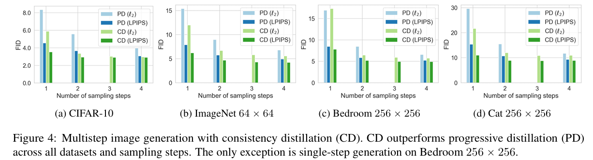 |
|---|
| 图4：利用一致性蒸馏（CD）进行多步图像生成。在所有数据集和采样步骤中，一致性蒸馏的表现都优于渐进式蒸馏（PD）。唯一的例外是在分辨率为256×256的“卧室”数据集上的单步生成情况。 |
- 直接生成：在表1和表2中，我们比较了一致性训练（CT）与其他生成模型在单步和两步生成中的样本质量。我们还纳入了PD和CD的结果作为参考。这两个表中报告的PD结果均使用$\ell_{2}$度量函数，这是Salimans和Ho（2022）原始论文中的默认设置。为了进行公平比较，我们确保PD和CD蒸馏相同的EDM模型。在表1和表2中，我们观察到CT在CIFAR-10数据集上显著优于现有的单步、非对抗性生成模型，即变分自编码器（VAEs）和归一化流。此外，CT在不依赖蒸馏的情况下，实现了与PD单步样本相当的质量。在图5中，我们展示了EDM样本（顶部）、单步CT样本（中间）和两步CT样本（底部）。在附录E中，我们在图14至图21中展示了CD和CT的更多样本。重要的是，即使CT和EDM模型是相互独立训练的，从相同初始噪声向量获得的所有样本也具有显著的结构相似性。这表明CT不太可能像EDM那样出现模式崩溃问题。
| 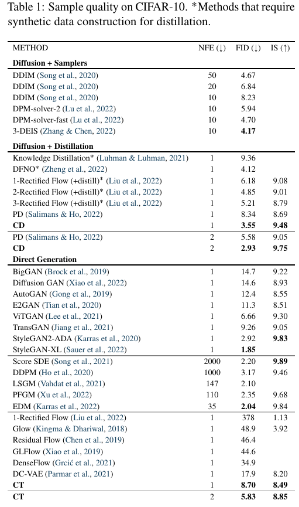 | 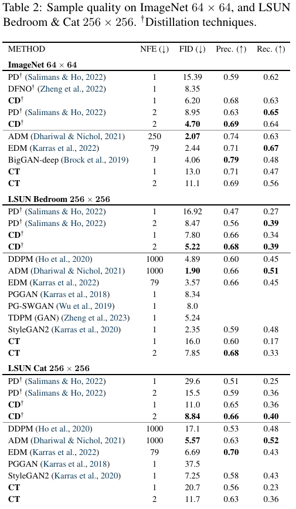 |
|---|---|
| 表1：在CIFAR-10数据集上的样本质量。 带标记的方法是那些需要构建合成数据用于蒸馏的方法。 | 表2：在64×64分辨率的ImageNet数据集以及256×256分辨率的LSUN卧室和LSUN猫数据集上的样本质量。 |
| 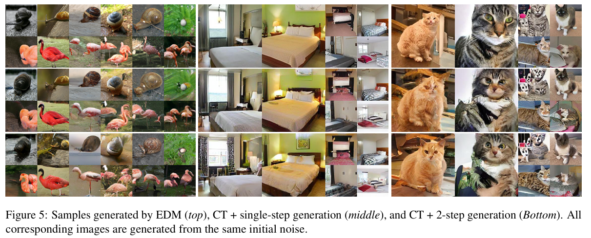 |
|---|
| 图5：由增强扩散模型（EDM）生成的样本（顶部）、一致性训练（CT）+单步生成的样本（中间） 以及一致性训练（CT）+两步生成的样本（底部）。所有相应图像均由相同的初始噪声生成。 |
6.3 零样本图像编辑
与扩散模型类似，一致性模型通过修改算法1中的多步采样过程来实现零样本图像编辑。我们使用在LSUN卧室数据集上通过一致性蒸馏训练的一致性模型来展示这种能力。在图6a中，我们展示了这样一个一致性模型可以在测试时对灰度卧室图像进行上色，尽管它从未在颜色化任务上进行过训练。在图6b中，我们展示了相同的一致性模型可以从低分辨率输入生成高分辨率图像。在图6c中，我们进一步展示了它可以基于人类绘制的笔画输入生成图像，就像扩散模型中的SDEdit（Meng等人, 2021）一样。同样，这种编辑能力是零样本的，因为模型没有在笔画输入上进行过训练。在附录D中，我们进一步展示了一致性模型在图像修复（图10）、插值（图11）和去噪（图12）方面的零样本能力，以及在颜色化（图8）、超分辨率（图9）和笔画引导图像生成（图13）方面的更多示例
| 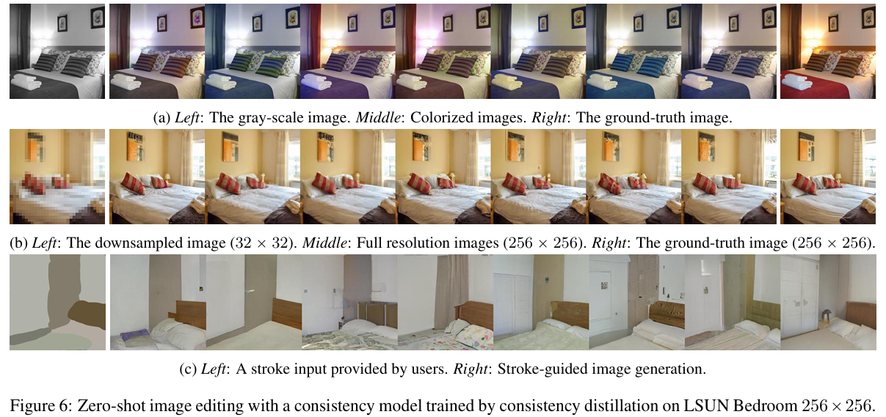 |
|---|
| 图6：利用在LSUN卧室（分辨率256×256 ）数据集上通过一致性蒸馏训练得到的一致性模型进行零样本图像编辑。 |
7. 结论
我们介绍了一致性模型，这是一类专门为支持单步和少步生成而设计的生成模型。通过实验，我们证明了在多个图像基准测试和较少的采样迭代中，我们的一致性蒸馏方法优于现有的扩散模型蒸馏技术。此外，作为独立的生成模型，一致性模型除了生成对抗网络（GANs）外，比现有的单步生成模型能生成更好的样本。与扩散模型类似，它们还支持零样本图像编辑应用，如图像修复、上色、超分辨率、去噪、插值和笔画引导的图像生成。
此外，一致性模型与其他领域中使用的技术有着惊人的相似之处，包括深度Q学习（Mnih等人, 2015）和基于动量的对比学习（Grill等人, 2020; He等人, 2020）。这为在这些不同领域之间交流思想和方法提供了令人兴奋的前景。
A. 证明
A.1. 符号说明
我们用$f_{\theta}(x, t)$表示由$\theta$参数化的一致性模型，用$f(x, t ; \phi)$表示公式(3)中经验概率流常微分方程（PF ODE）的一致性函数。这里$\phi$表示其对预训练得分模型$s_{\phi}(x, t)$的依赖。对于公式(2)中PF ODE的一致性函数，我们将其记为$f(x, t)$ 。给定一个多元函数$h(x, y)$，我们用$\partial_{1} h(x, y)$表示$h$关于$x$的雅可比矩阵，类似地，用$\partial_{2} h(x, y)$表示$h$关于$y$的雅可比矩阵。除非另有说明，$x$被认为是从数据分布$p_{data }(x)$中采样的随机变量，$n$是从$[1, N - 1]$中均匀随机采样的，$x_{t_{n}}$是从$N(x ; t_{n}^{2} I)$中采样的。这里$[1, N - 1]$表示整数集$\{1, 2, \cdots, N - 1\}$。此外，回想一下我们定义：
其中$\Phi(\cdots ; \phi)$表示由得分模型$s_{\phi}(x, t)$定义的经验PF ODE的单步ODE求解器的更新函数。默认情况下，$\mathbb{E}[\cdot]$表示对表达式中所有相关随机变量的期望。
A.2. 一致性蒸馏
定理1. 设$\Delta t:=\max_{n \in [1, N - 1]}|t_{n+1}-t_{n}|$，$f(\cdot, \cdot ; \phi)$是公式(3)中经验PF ODE的一致性函数。假设$f_{\theta}$满足利普希茨条件：存在$L > 0$，使得对于所有$t \in [\epsilon, T]$，$x$和$y$，有$\left|f_{\theta}(x, t)-f_{\theta}(y, t)\right|_{2} \leq L|x - y|_{2}$。进一步假设对于所有$n \in [1, N - 1]$，在$t_{n+1}$处调用的ODE求解器的局部误差一致有界为$O((t_{n+1}-t_{n})^{p + 1})$，其中$p \geq 1$。那么，如果$L_{C D}^{N}(\theta, \theta ; \phi)=0$，则有：
证明：由$L_{CD}^{N}(\theta, \theta ; \phi)=0$，我们有：
根据定义，我们有$p_{t_{n}}(x_{t_{n}})=p_{data }(x) \otimes N(0, t_{n}^{2} I)$，其中$t_{n} \geq \epsilon > 0$。由此可知，对于每个$x_{t_{n}}$和$1 \leq n \leq N$，$p_{t_{n}}(x_{t_{n}})>0$。因此，公式(11)意味着：
因为$\lambda(\cdot)>0$且$d(x, y)=0 \Leftrightarrow x = y$，这进一步意味着：
现在，令$e_{n}$表示在$t_{n}$处的误差向量，定义为：
我们可以很容易地推导出以下递归关系：
其中，(i)是由于公式(13)以及$f(x_{t_{n+1}}, t_{n+1} ; \phi)=f(x_{t_{n}}, t_{n} ; \phi)$。因为$f_{\theta}(\cdot, t_{n})$的利普希茨常数为$L$，所以我们有：
其中，(i)成立是因为ODE求解器的局部误差有界为$O((t_{n+1}-t_{n})^{p+1})$。此外，我们观察到$e_{1}=0$，因为：
这里，(i)为真，是由于一致性模型的参数化使得$f(x_{t_{1}}, t_{1} ; \phi)=x_{t_{1}}$；(ii)由$f(\cdot, \cdot ; \phi)$的定义得出。这使我们能够对递归公式(14)进行归纳，得到：
至此证明完成。$\square$
A.3. 一致性训练
以下引理为得分函数提供了一个无偏估计量，这对我们证明定理2至关重要。
引理1. 设$x \sim p_{data }(x)$，$x_{t} \sim N(x ; t^{2} I)$，且$p_{t}(x_{t})=p_{data }(x) \otimes N(0, t^{2} I)$。我们有：
证明：根据$p_{t}(x_{t})$的定义，我们有：
其中$p(x_{t} | x)=N(x_{t} ; x, t^{2} I)$。这个表达式可以进一步简化为：
其中，(i)是由于贝叶斯法则。
定理2. 设$\Delta t:=\max_{n \in [1, N - 1]}|t_{n+1}-t_{n}|$。假设$d$和$f_{\theta^{-}}$都是二阶连续可微的，且二阶导数有界，加权函数$\lambda(\cdot)$有界，并且$\mathbb{E}[\left|\nabla \log p_{t_{n}}(x_{t_{n}})\right|_{2}^{2}]<\infty$。进一步假设我们使用欧拉ODE求解器，并且预训练得分模型与真实情况匹配，即对于所有$t \in [\epsilon, T]$，有$s_{\phi}(x, t) \equiv \nabla \log p_{t}(x)$。那么：
其中，期望是关于$x \sim p_{data }$，$n \sim U [1, N - 1]$，以及$x_{t_{n+1}} \sim N(x ; t_{n+1}^{2} I)$取的。一致性训练目标记为$L_{C T}^{N}(\theta, \theta^{-})$，定义为：
其中$z \sim N(0, I)$。此外，如果$\inf_{N} L_{C D}^{N}(\theta, \theta^{-} ; \phi)>0$，则$L_{C T}^{N}(\theta, \theta^{-}) \geq O(\Delta t)$。
证明：通过泰勒展开，我们有：
然后，我们将引理1应用于公式(15)，并以相反的方向使用泰勒展开，得到：
$$\begin{align}
\mathcal{L}_{CD}^{N}\left(\theta, \theta^{-} ; \phi\right)&+\mathbb{E}\left[\lambda\left(t_{n}\right) d\left(f_{\theta}\left(x_{t_{n+1}}, t_{n+1}\right), f_{\theta^{-}}\left(x_{t_{n+1}}, t_{n+1}\right)\right)\right]\\
&+\mathbb{E}\left\{\lambda\left(t_{n}\right) \partial_{2} d\left(f_{\theta}\left(x_{t_{n+1}}, t_{n+1}\right), f_{\theta^{-}}\left(x_{t_{n+1}}, t_{n+1}\right)\right)\left[\partial_{1} f_{\theta^{-}}\left(x_{t_{n+1}}, t_{n+1}\right)(t_{n}-t_{n+1})t_{n+1} \mathbb{E}\left[\frac{x_{t_{n+1}}-x}{t_{n+1}^{2}} \big| x_{t_{n+1}}\right]\right]\right\}\\
&+\mathbb{E}\left\{\lambda\left(t_{n}\right) \partial_{2} d\left(f_{\theta}\left(x_{t_{n+1}}, t_{n+1}\right), f_{\theta^{-}}\left(x_{t_{n+1}}, t_{n+1}\right)\right)\left[\partial_{2} f_{\theta^{-}}\left(x_{t_{n+1}}, t_{n+1}\right)(t_{n}-t_{n+1})t_{n+1} \mathbb{E}\left[\frac{x_{t_{n+1}}-x}{t_{n+1}^{2}} \big| x_{t_{n+1}}\right]\right]\right\}\\
&+\mathbb{E}\left[\lambda\left(t_{n}\right) \partial_{2} d\left(f_{\theta}\left(x_{t_{n+1}}, t_{n+1}\right), f_{\theta^{-}}\left(x_{t_{n+1}}, t_{n+1}\right)\right)\left[\partial_{2} f_{\theta^{-}}\left(x_{t_{n+1}}, t_{n+1}\right)(t_{n}-t_{n+1})\right]\right\}+E\left[\omega\left[\left(t_{n+1}-t_{n}\right)\right]\right]\\
&=\mathbb{E}\left[\lambda\left(t_{n}\right)\right) d\left(f\left(x_{